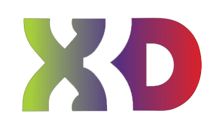

Consider supporting the companies who support Teaching Tech. Both of these companies supply me with free consumables in return for moderate exposure on my channel. I was a happy customer of each before entering sponsorship agreements. Full details are below for transparency.
|  |
X3D - FILAMENT SUPPLIERX3D supply me with quality filament for free each month to aid me in making my videos. This includes X3D Pro branded filaments as well as the other brands they stock such as Form Futura and Polymaker. In return I display their logo behind me, have a link to their website in every video description and mention their name and products in my videos from time to time. Before I asked X3D to be my filament sponsor, I was a satisfied customer, using their X3D Pro PLA. I receive no commission for the sale of X3D products and have no stipulations on what filaments I use and what I say about them. When I test a new filament, it is because I choose to and my opinion is not influenced in any way. On some occasions I have purchased other products from X3D with my own money, such as the Polymaker Polysher, to ensure no conflict of interest. |
3D PRINTERS ONLINE - RESIN SUPPLIER3D Printers Online supply me with quality resin for free each month to aid me in making my videos. This is typically Phrozen branded resin which I have used successfully with Phrozen and other machines. In return I display their logo behind me, have a link to their website in every video description and mention their name and products in my videos from time to time. Before 3D Printers Online were my resin sponsor, I was a satisfied customer, purchasing two Wanhao Duplicator 7 resin printers from them. I appreciated their clear communication and after sales customer support. I receive no commission for the sale of 3D Printers Online products and have no stipulations on what resins I use and what I say about them. When I test a new resin, it is because I choose to and my opinion is not influenced in any way. On some occasions I have purchased other products from 3D Printers Online with my own money, such as additional resin vats and consumables for resin printers, to ensure no conflict of interest. 5% off storewide for Teaching Tech subscribers [Code: tech5] |